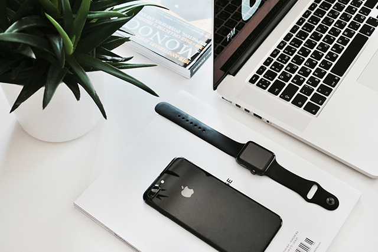

HR-автоматизация заявок
Спроектировал процесс обработки заявок сотрудников и подготовил ТЗ для автоматизации.
Смотреть кейсСпроектировал процесс обработки заявок сотрудников и подготовил ТЗ для автоматизации.
Смотреть кейс
Собрал и формализовал требования к цифровому сервису банка, приоритизировал бэклог.
Смотреть кейсОписал контракты REST API и сценарии интеграции интернет-магазина с системой логистики.
Смотреть кейс
Создал кликабельный прототип с описанием UX-сценариев и провёл проверку гипотез.
Смотреть кейсПровёл аудит и перепроектировал процесс адаптации сотрудников, сократив сроки выхода на результат.
Смотреть кейс
Подготовил полный комплект документации: SRS, BRD, спецификации API и пользовательские инструкции.
Смотреть кейс